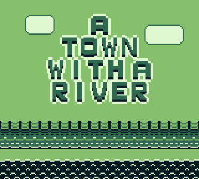
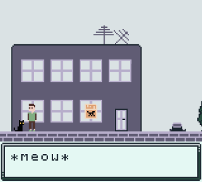
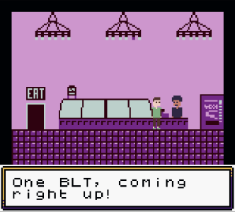
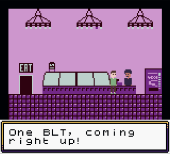
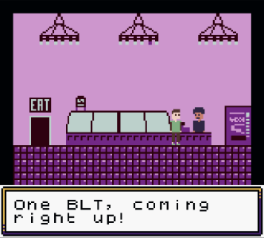

 


This short, retro, fetch-questy RPG is all about saving the town, classic Gameboy gameplay (with a hint of flash), and definitely not a story about anxiety and fear of the unknown. There's no strange horrors waiting for you at the end. There are no incomplete plot threads and you won't be left with any unanswered questions.
Everything will be alright.
Special thanks to MaterialFuture, Pixel Creation, Kemono, and KnoblePersona for their tile sets and assets, DeerTears and krümel for their music, and Soully for the Gameboy manual template!
Play in browser by clicking here!
Download the manual for controls and credits by clicking here!
Or download Gameboy Color ROMs, Analogue Pocket files, manuals, and donate on itch.io!